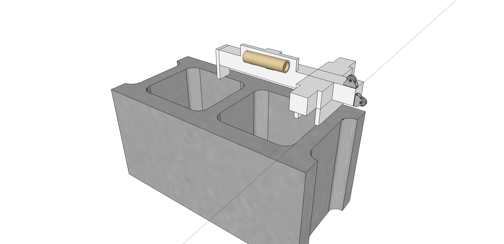
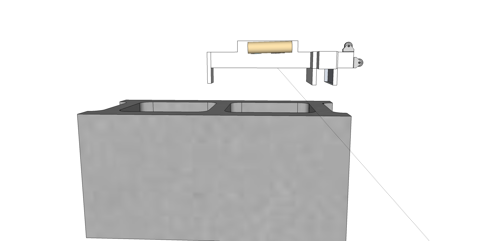
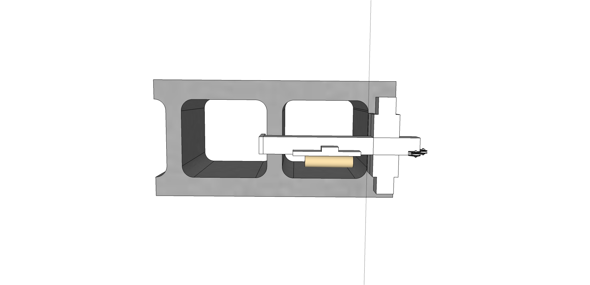
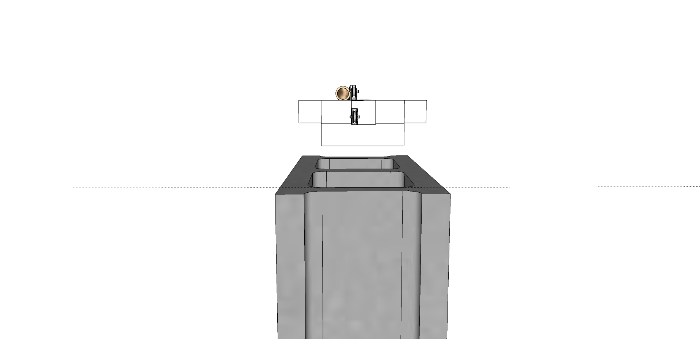
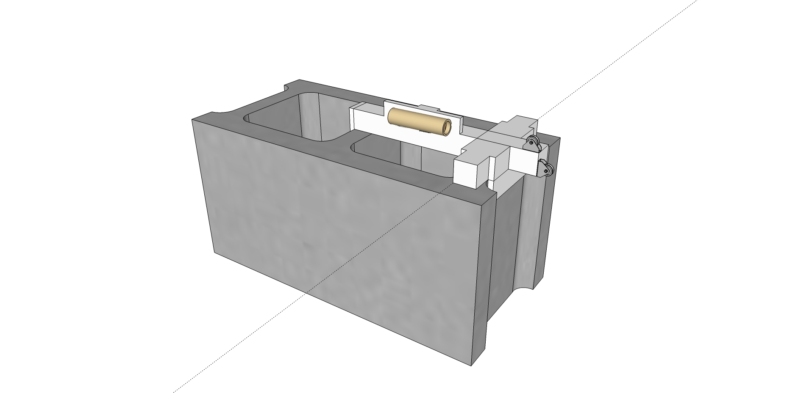

Forums » Discussion »
Modification of Aaron's structure concept based on requirements dialog with CCSSC
Added by J. Simmons about 9 years ago
Note: This thread is not meant to solidify a design concept. I just had a brainstorm and I wanted to capture it before I lost it. Plus, I thought this would also give us a starting place for design discussions. Clearly we still need to update the requirements based on last night's meeting and evaluate this (and other concepts) against the revised requirements.
So, last night's meeting really got me thinking. Aaron's extruded AL structure has many very desirable qualities:
- low cost
- easy to assemble (with the possible exception of drilling out the holes to mount it to the concrete block)
- Good for transport/shipping
- light weight
- small
- easy to breakdown if needed
- places motor in a position which does not require deflection of the ejection charge
So, it would be great if we could build off that idea and address the requirements that it does not quite hit, such as:
- make sure assembly does not require specialized tools (like masonry drill bits)
- make sure the test stand supports load cell calibration without changing its configuration
There are others, but these are the ones that I was focused on when I was thinking about the design. What really got me thinking was the idea of considering traditional concrete blocks. As I thought about how those are shaped I came up with an idea for how a small change to Aaron's design could allow the AL frame to "slip" over a traditional concrete block. Take a look at the pics below to see my idea. (Generated in SketchUp 2013 Make Edition, see attachments for the source file if you want to look at it in 3D).





Notice how this concept adds some plates/fins which fit around the concrete blocks walls. This seems to me to be a way to use a minimum amount of material and get the "slide on/off" capability we have with the v1.x structure. I also started looking at how we could place some pulleys to address the calibration requirements. But, that is definitely an area where I am not as experienced in designing, so I more than welcome input on it. Finally, the motor mount is not really addressed in these sketches. That seems like it is an entire design discussion in its own right.
shepard_v2.0_concept2_sketch.jpg (205.9 kB)
{kind=link}
shepard_v2.0_concept2_sketch_side.jpg (133.2 kB)
{kind=link}
shepard_v2.0_concept2_sketch_top.jpg (94.9 kB)
{kind=link}
shepard_v2.0_concept2_sketch_back.jpg (97.3 kB)
{kind=link}
shepard_v2.0_concept2_sketch_mounted.jpg (169.9 kB)
{kind=link}
Replies (4)
RE: Modification of Aaron's structure concept based on requirements dialog with CCSSC - Added by Jeremy Wright about 9 years ago
I do like your thought process on this. The design follows the KISS principle and keeps the amount of material used (and thus cost) to a minimum. A couple thoughts though...
- I would like to try to use COTS extruded aluminum parts where ever possible. That's why I will keep pushing for us to connect with the Misumi sales and application engineering departments before we get too far down a design path. I think sketches like these are exactly what we need to start the conversation with them though.
- I'm a little worried about tying us to a specific block type that's made with U.S. specific dimensions. While it's true that we could make the clamping fins adjustable, that could add complexity that I would like to avoid. I guess the U.S. dimensions part of the discussion hinges on whether or not we're shooting for a global market for the Shepard 2.x kits. I've always assumed yes, but I don't think we've ever made an intentional decision about it.
RE: Modification of Aaron's structure concept based on requirements dialog with CCSSC - Added by Christopher Sigman about 9 years ago
I think even with a US spec block, we'd want some ability to tighten it to the block. I do like this idea though. It very well could be cheaper than my idea for an adjustable fixture for the mount onto a block.
On another note, what did you use to sketch this up?
RE: Modification of Aaron's structure concept based on requirements dialog with CCSSC - Added by Jeremy Wright about 9 years ago
(Generated in SketchUp 2013 Make Edition, see attachments for the source file if you want to look at it in 3D)
RE: Modification of Aaron's structure concept based on requirements dialog with CCSSC - Added by J. Simmons about 9 years ago
Thanks, Jeremy. Glad to hear you like my thought process. I was aiming at minimum material and minimum changes to Aaron's ideas. In terms of your (and Chris') comments,
- Ditto on using COTS extruded aluminum parts. Please do not take any part of my sketch to indicate otherwise. I was just trying to get the concept of something which could use the shape of the concrete block to allow for a minimum of additional material and still slide over the block to create a secure mounting.
- So I have several thoughts about the block. First, I think that with our US centric design limitations (thank you export controls) it is perhaps unreasonable to be worrying about any of our projects being international. Especially something like Shepard which requires users to source local materials like the concrete block. Building in enough flexibility to account for slight variation in US standard concrete blocks is one thing (and something I think we need to be able to do, with or without Chris' idea of having something that can tighten down on the block - that is a good idea, by the way). Building something that can fit concrete block standards all over the world sounds like a lot of added complexity. More concerning is that I am not certain we will have the demand for the kits overseas (between our lack of penetration into that market and the shipping costs). I think it would be better to focus on US designs for now, with an eye toward making the mounting part of the design something that can be changed out for other styles of blocks. Then if we get a lot of demand outside the US, we can look at mounting options in the market where there is demand.
I should also point out that I think identifying we have not made any decisions about US vs international designs and sales is a great catch by Jeremy. It is far better to bring this kind of thing up for discussion than let it continue to be an unspoken assumption.
Finally, I still think we need to get the requirements ironed out before this gets too far along so we can actually compare the design to the requirements. I'll see if I can find some time in the next day or so to post a forum thread summarizing the hangout from last week and get the conversation going on revised requirements.
(1-4/4)